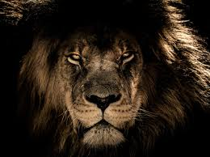

EL LEÓN
Los leones son mamíferos carnívoros pertenecientes a la familia de los felinos y son conocidos como los "reyes de la selva". Son una de las especies más emblemáticas y reconocibles del reino animal.
Características
- Apariencia: Los leones son grandes felinos con una apariencia distintiva. Los machos son más grandes que las hembras y pueden pesar hasta 190 kg, mientras que las hembras suelen pesar alrededor de 130 kg. Tienen una melena en la cabeza y el cuello, que es más prominente en los machos adultos. Su coloración es generalmente amarillo-arena, con el vientre y la parte interna de las patas de color blanco.
- Hábitat: Los leones habitan principalmente en las zonas de sabana, pastizales y bosques abiertos de África subsahariana. Anteriormente, también se encontraban en partes de Asia, pero en la actualidad su distribución se limita principalmente a África.
- Estructura social: Los leones son animales sociales que viven en grupos llamados manadas o grupos de leones. Una manada típica está compuesta por varios machos adultos, varias hembras adultas y sus crías. Las hembras suelen ser las cazadoras principales, mientras que los machos protegen el territorio y a las crías. Estas manadas pueden variar en tamaño, desde unas pocas decenas hasta más de veinte individuos.
- Alimentación: Los leones son depredadores carnívoros y se alimentan principalmente de grandes mamíferos como ñus, cebras, búfalos y antílopes. Las hembras son las principales cazadoras y suelen trabajar en equipo para emboscar a sus presas. Una vez que la presa es capturada, los machos también tienen acceso a la comida.
- Reproducción: La reproducción en los leones está controlada principalmente por los machos dominantes de la manada. Las hembras tienen ciclos estrales y solo están receptivas durante un corto período de tiempo. Después de un período de gestación de aproximadamente 110 días, la hembra da a luz a una camada de cachorros. Las crías son criadas en la manada y son amamantadas por las hembras, aunque todos los miembros de la manada ayudan a cuidar y proteger a los cachorros.
- Conservación: Aunque los leones son considerados una especie vulnerable, su estado de conservación ha sido motivo de preocupación en los últimos años debido a la pérdida de hábitat, la caza furtiva y el conflicto con los humanos. Se han realizado esfuerzos para proteger y conservar las poblaciones de leones a través de parques nacionales, reservas naturales y programas de conservación.
Aunque de manera muy reducida, los leones aún tienen presencia y son nativos de los siguientes países:
La vida de un león se puede dividir en varias etapas
- Cachorro: Los leones nacen en camadas de dos a cuatro cachorros. Al principio, son ciegos y dependen por completo de su madre. Durante las primeras semanas, permanecen en la madriguera o en áreas protegidas del territorio. A medida que crecen, comienzan a explorar su entorno bajo el cuidado y protección de la madre.
- Adolescencia: A medida que los cachorros crecen, entran en la etapa de la adolescencia, que suele durar entre uno y dos años. Durante este tiempo, aprenden habilidades de caza y participan en juegos y luchas simuladas para desarrollar fuerza y destreza. También comienzan a acompañar a los adultos en la caza, aunque no son tan efectivos como los leones adultos.
- Adultez: Los leones alcanzan la madurez sexual entre los 3 y 4 años de edad. En esta etapa, los machos buscan establecer su propio territorio y formar o unirse a una manada. Los machos que no logran adquirir un territorio propio pueden convertirse en "solitarios", vagando sin formar parte de una manada. Las hembras también pueden abandonar la manada natal para unirse a otro grupo./li>
- Reproducción: Una vez que los leones han establecido su territorio y se han unido a una manada, pueden comenzar a reproducirse. Las hembras tienen ciclos estrales y solo están receptivas durante un corto período de tiempo. Después de la reproducción, la hembra buscará un lugar apartado para dar a luz a sus cachorros y los cuidará durante sus primeras semanas de vida.
- Vida adulta: Durante su vida adulta, los leones se dedican principalmente a la protección del territorio, la caza y la crianza de las crías. Los machos son responsables de proteger el territorio de la manada de leones rivales, mientras que las hembras son las principales cazadoras y proveedoras de alimento para la manada. Los leones pueden vivir entre 10 y 14 años en la naturaleza, aunque en cautiverio pueden llegar a vivir más tiempo.
